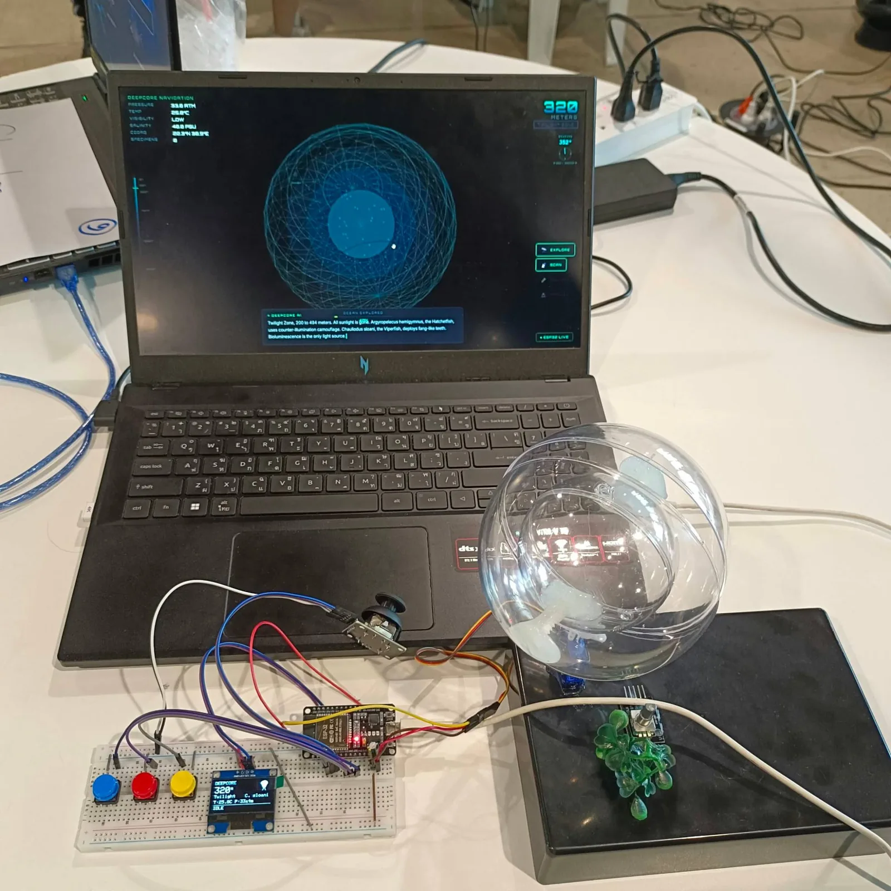
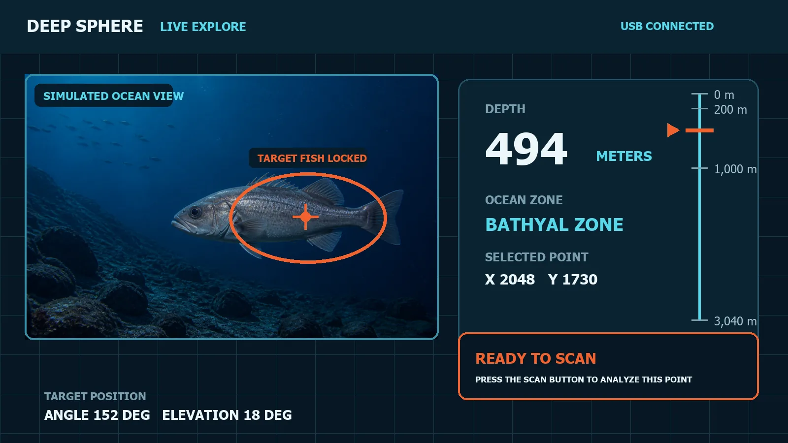
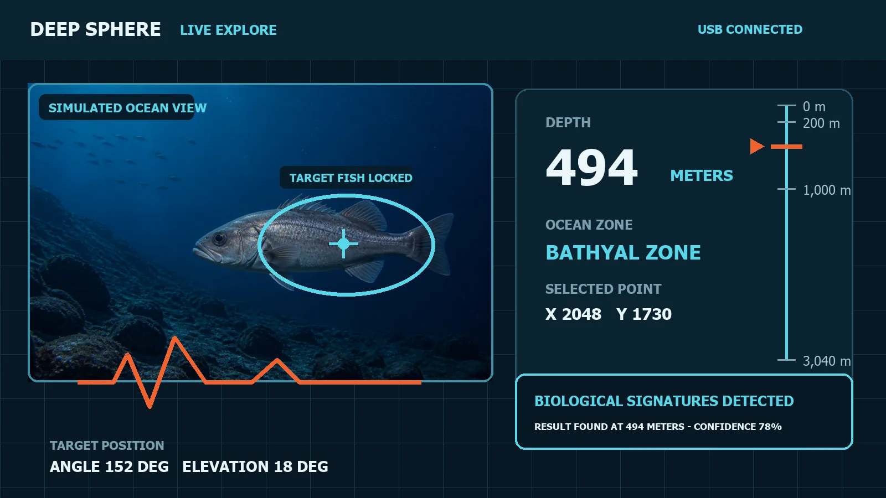
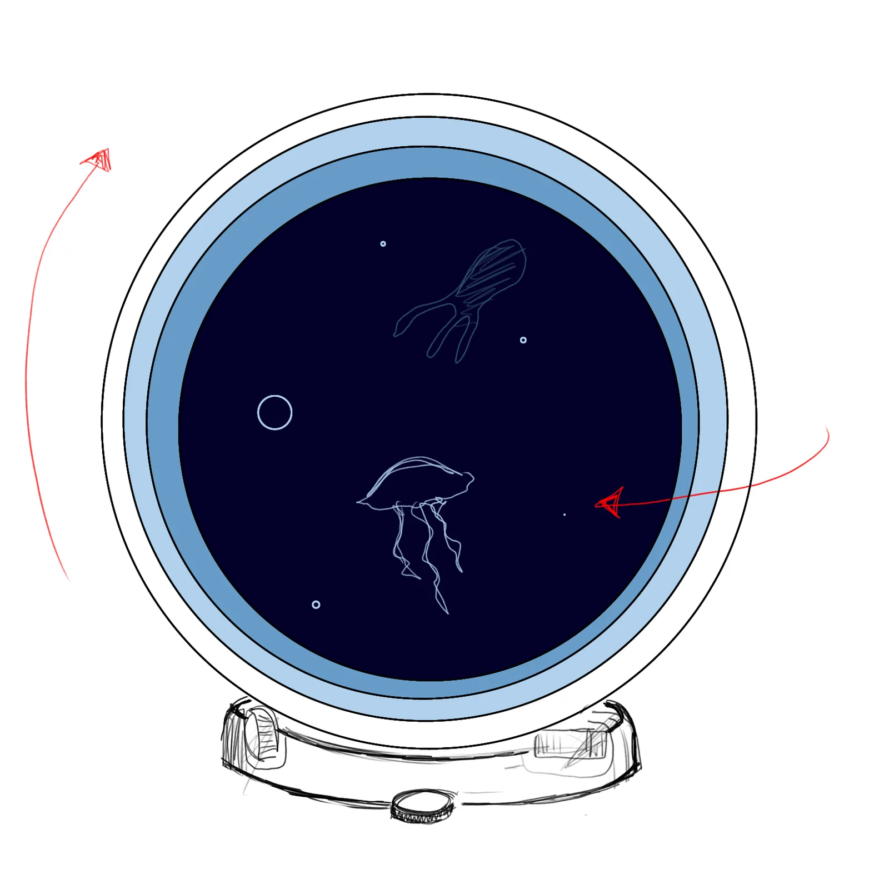

DeepCore → DeepSphere
A hands-on deep-sea explorer you turn and dial, where every animal is a real species. DeepCore won 1st place at a hackathon; DeepSphere is the version I’m building now.
- Year
- 2026 – present
- Team / role
- Team lead
- Tools
- ESP32 · OLED · joystick · slip ring + angle sensor · 3D printing · web 3D / digital twin
- Status
- done DeepCore — 1st Place
in progress DeepSphere

Problem
The hackathon theme was the deep sea. The question I set for the team: how can someone explore it with their hands rather than through another screen app — and meet only animals that actually exist?
What I decided
- A physical device, not a game, map or dashboard — exploring should be something you hold and turn.
- Real data only. 44 real species with cited sources; no invented animals.
- Sound direction. On DeepCore I set which sounds we needed and a teammate sourced them. On DeepSphere a teammate found 13 sounds and I made the rest.
- DeepSphere: a periscope you turn by hand. A ring of six screens rotated by hand (slip ring + angle sensor), a console with a depth wheel, and a web digital twin.
- Print rules I set. No supports, thin walls, and snap-fits instead of screws, since I have no threading tools.
- Modelling. I modelled DeepSphere v1 entirely myself; for the current version an AI model helps build the CAD.
Result
DeepCore was assembled from real parts (no 3D printing) and won 1st Place at KMUTT Deep Sea Jam Hackathon 2026. DeepSphere is in progress: the three-layer sphere is not finished, and most of the screens still have problems I’m working through.
Gallery



Sketches & process

My role vs AI
Me: team lead; concept, device design, modelling and printing (DeepSphere), assembly and soldering, sound direction. Teammates: marine research, presentation deck, sourcing sounds, presenting. Code: written by AI to my spec; I check it.